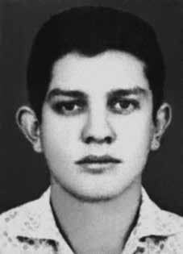

Manoel
Lisbôa
de Moura
CIRCUNSTÂNCIAS DA MORTE
Manoel Lisbôa de Moura morreu em 4 de setembro de 1973, junto a Emmanuel Bezerra dos Santos – seu companheiro no Partido Comunista Revolucionário (PCR) –, na cidade de São Paulo, em decorrência de tortura praticada por agentes do Estado. De acordo com a versão oficial, tanto Manoel quanto Emmanuel teriam sido mortos em tiroteio com policiais. Segundo esta versão, adotada por relatório constante do Inquérito Policial do Departamento de Ordem Política e Social (DOPS) de São Paulo, Manoel teria informado à polícia um encontro com Emmanuel, recém-chegado do Chile, no dia 4 de setembro de 1973, no Largo da Moema, em São Paulo. Os agentes da repressão teriam então montado uma emboscada e aguardado a chegada de Emmanuel. Logo após o avistarem, os agentes da repressão teriam dado voz de prisão a Emmanuel e, neste instante, este teria atirado nos agentes, que teriam reagido, desferindo tiros na direção dos dois. Manoel e Emmanuel teriam morrido quando estavam sendo levados para o Hospital de Clínicas. Tal versão é reproduzida na requisição do exame necroscópico de Manoel, assinada pelo delegado Edsel Magnotti, no laudo de exame de corpo de delito, assinado pelos médicos legistas Harry Shibata e Armando Cânger Rodrigues e, anos depois, no relatório do Ministério da Aeronáutica enviado ao Ministério da Justiça em 1993, conforme o qual os dois militantes teriam sido mortos em um suposto confronto com agentes dos órgãos de segurança. A referida versão oficial, porém, é contrariada por documentos dos próprios órgãos de informação. Documento do CISA de 7/1/1974 confirma que Manoel e Emmanuel foram presos pelo Destacamento de Operações de Informações – Centro de Operações de Defesa Interna (DOI-CODI) do IV Exército, e não em São Paulo: Esta Agência tomou conhecimento e divulga a seguinte informação: 1 – Em Recife, Maceió, Natal e João Pessoal, o PCR (Partido Comunista Revolucionário) vem sendo desmantelado pelo DOI/IV EX, com a prisão de dezenas de militantes e morte de três deles – Manoel Aleixo da Silva (Ventania), Emanoel Bezerra dos Santos (Flávio) e Manoel Lisboa de Moura (Mário ou Galego). Conforme testemunhou a operária Fortunata, citada no Dossiê Ditadura: Mortos e Desaparecidos Políticos no Brasil, Emmanuel e Manoel foram capturados na cidade de Recife (PE). Na ocasião, a operária conversava com Manoel na Praça Ian Flemming, no bairro de Rosarinho. O policial Luiz Miranda, de Pernambuco, e o delegado paulista Sérgio Paranhos Fleury foram responsáveis pelas prisões. Manoel foi algemado, arrastado para um veículo e levado ao DOI-CODI do IV Exército. Segundo denúncia de Selma Bandeira Mendes, que havia sido casada com Manoel e que esteve no DOI do IV Exército no mesmo período que Manoel, ele foi torturado pela equipe de Luiz Miranda. José Nivaldo Júnior, outro companheiro preso no mesmo período, também o viu neste local, em sua cela, deitado no chão e sem roupa, apresentando diversos sinais de tortura. Encaminhado para o DOI-CODI/SP cerca de dez dias depois, Manoel foi torturado novamente, desta vez com a participação de Fleury. Em decorrência das sevícias sofridas, morreu no dia 4 de setembro. O militante apresentava diversas marcas de queimaduras em todo o seu corpo e estava quase paralítico. Manoel, tal como Emmanuel Bezerra dos Santos, foi enterrado como indigente no Cemitério de Campo Grande, em São Paulo. O irmão de Manoel, o capitão do Exército Carlos Cavalcante, em carta enviada ao major Maciel, em 7 de setembro de 1973, solicitou que se realizasse a identificação do número da Guia do Instituto Médico Legal (IML) referente à sepultura do seu irmão, já que, ao se dirigir ao Cemitério de Campo Grande, verificou existirem duas guias, relativas a militantes diferentes de “nome desconhecido”, contendo porém as mesmas indicações: “indivíduo de cor branca, vinte e cinco anos presumíveis e, como causa mortis, anemia aguda por hemorragia interna e externa traumática”. Além de tentar recuperar o corpo de seu irmão, Carlos ainda demandou a devolução dos pertences de Manoel que não fossem necessários aos autos do processo e alguma fotografia sua recente. Foi informado que sua família somente poderia receber o corpo caso se comprometesse a não abrir o caixão, que seria entregue lacrado. A família de Manoel recusou, pois desse modo não poderia ter a certeza de que o corpo entregue seria, de fato, de Manoel. Em análise da CEMDP, a relatora do caso ressaltou que os órgãos a serviço da repressão conheciam a identidade real de Manoel, o que agrava ainda mais o fato de ter sido enterrado como “desconhecido”. O monitoramento de Manoel pelo Serviço de Informação, assim como a perseguição a ele, eram intensos desde o início da ditadura, por conta de sua posição de liderança política. Os restos mortais de Manoel Lisbôa de Moura foram exumados em 1991, quando da exumação dos restos mortais de Emmanuel Bezerra dos Santos, sendo trasladados para Maceió em 6 maio de 2003, após intervenção da Comissão de Familiares e Mortos e Desaparecidos Políticos e ato público celebrado na Prefeitura de São Paulo.
Manoel Lisbôa de Moura died on September 4, 1973, together with Emmanuel Bezerra dos Santos – his companion in the Revolutionary Communist Party (PCR) –, in the city of São Paulo, as a result of torture carried out by State agents. According to the official version, both Manoel and Emmanuel were killed in a shootout with police officers. According to this version, adopted by a report from the Police Inquiry of the Department of Political and Social Order (DOPS) of São Paulo, Manoel would have informed the police of a meeting with Emmanuel, recently arrived from Chile, on September 4, 1973, in Largo da Moema, in São Paulo. The repression agents would then have set up an ambush and awaited Emmanuel's arrival. Soon after spotting him, the repression agents would have arrested Emmanuel and, at that moment, he would have shot at the agents, who would have reacted, firing shots in the direction of the two. Manoel and Emmanuel would have died when they were being taken to the Hospital de Clínicas. This version is reproduced in the request for Manoel's necroscopic examination, signed by delegate Edsel Magnotti, in the corpus delicti examination report, signed by the coroners Harry Shibata and Armando Cânger Rodrigues and, years later, in the report from the Ministry of Aeronautics sent to the Ministry of Justice in 1993, according to which the two militants were killed in an alleged confrontation with agents from the security agencies. The aforementioned official version, however, is contradicted by documents from the news agencies themselves. CISA document dated 7/1/1974 confirms that Manoel and Emmanuel were arrested by the Information Operations Detachment – Internal Defense Operations Center (DOI-CODI) of the IV Army, and not in São Paulo: This Agency took note and publishes the following information: 1 – In Recife, Maceió, Natal and João Pessoal, the PCR (Revolutionary Communist Party) has been dismantled by the DOI/IV EX, with the arrest of dozens of militants and the death of three of them – Manoel Aleixo da Silva (Ventania), Emanoel Bezerra dos Santos (Flávio) and Manoel Lisboa de Moura (Mário or Galego). As the worker Fortunata testified, cited in the Ditadura Dossier: Dead and Missing Politicians in Brazil, Emmanuel and Manoel were captured in the city of Recife (PE). At the time, the worker was talking to Manoel at Praça Ian Flemming, in the Rosarinho neighborhood. Police officer Luiz Miranda, from Pernambuco, and São Paulo police chief Sérgio Paranhos Fleury were responsible for the arrests. Manoel was handcuffed, dragged to a vehicle and taken to the IV Army's DOI-CODI. According to a complaint by Selma Bandeira Mendes, who had been married to Manoel and who was in the DOI of the IV Army during the same period as Manoel, he was tortured by Luiz Miranda's team. José Nivaldo Júnior, another companion arrested during the same period, also saw him in this place, in his cell, lying on the floor without clothes, showing various signs of torture. Sent to DOI-CODI/SP around ten days later, Manoel was tortured again, this time with the participation of Fleury. As a result of the abuse suffered, he died on September 4th. The militant had several burn marks all over his body and was almost paralyzed. Manoel, like Emmanuel Bezerra dos Santos, was buried as a pauper in the Campo Grande Cemetery, in São Paulo. Manoel's brother, Army Captain Carlos Cavalcante, in a letter sent to Major Maciel, on September 7, 1973, requested that the number of the Legal Medical Institute Guide (IML) be identified for his brother's grave, since, when he went to the Campo Grande Cemetery, he found that there were two guides, relating to different militants with an “unknown name”, but containing the same information: “white individual, presumed twenty-five years old and, as the cause of death, acute anemia due to traumatic internal and external hemorrhage”. In addition to trying to recover his brother's body, Carlos also demanded the return of Manoel's belongings that were not necessary for the case files and any recent photographs of him. He was informed that his family could only receive the body if they agreed not to open the coffin, which would be delivered sealed. Manoel's family refused, as they could not be sure that the body delivered would, in fact, be Manoel's. In an analysis by CEMDP, the case's rapporteur highlighted that the bodies responsible for repression knew Manoel's real identity, which further aggravates the fact that he was buried as an “unknown”. The monitoring of Manoel by the Information Service, as well as the persecution of him, were intense since the beginning of the dictatorship, due to his position of political leadership. The mortal remains of Manoel Lisbôa de Moura were exhumed in 1991, when the remains of Emmanuel Bezerra dos Santos were exhumed, and were transferred to Maceió on May 6, 2003, after intervention by the Commission on Relatives and Political Deaths and Disappearances and a public event held at São Paulo City Hall.
Manoel Lisbôa de Moura murió el 4 de septiembre de 1973, junto con Emmanuel Bezerra dos Santos –su compañero en el Partido Comunista Revolucionario (PCR)–, en la ciudad de São Paulo, como consecuencia de torturas practicadas por agentes del Estado. Según la versión oficial, tanto Manoel como Emmanuel murieron en un tiroteo con agentes de policía. Según esta versión, adoptada por un informe de la Investigación Policial del Departamento de Orden Político y Social (DOPS) de São Paulo, Manoel habría informado a la policía de un encuentro con Emmanuel, recién llegado de Chile, el 4 de septiembre de 1973, en Largo da Moema, en São Paulo. Los agentes de represión habrían preparado entonces una emboscada y aguardaron la llegada de Emmanuel. Al poco de detectarlo, los agentes de represión habrían detenido a Emmanuel y, en ese momento, habría disparado contra los agentes, quienes habrían reaccionado disparando en dirección a los dos. Manoel y Emmanuel habrían muerto cuando eran trasladados al Hospital de Clínicas. Esta versión se reproduce en la solicitud de examen necroscópico de Manoel, firmada por el delegado Edsel Magnotti, en el informe de examen del corpus delicti, firmado por los forenses Harry Shibata y Armando Cânger Rodrigues y, años más tarde, en el informe del Ministerio de Aeronáutica enviado al Ministerio de Justicia en 1993, según el cual los dos militantes murieron en un supuesto enfrentamiento con agentes de los organismos de seguridad. La versión oficial antes mencionada, sin embargo, se contradice con documentos de las propias agencias de noticias. Documento CISA del 1/7/1974 confirma que Manoel y Emmanuel fueron detenidos por el Destacamento de Operaciones de Información – Centro de Operaciones de Defensa Interna (DOI-CODI) del IV Ejército, y no en São Paulo: Esta Agencia tomó nota y publica la siguiente información: 1 – En Recife, Maceió, Natal y João Pessoal, el PCR (Partido Comunista Revolucionario) fue desmantelado por el DOI/IV EX, con la detención de decenas de militantes y la muerte de tres de ellos: Manoel Aleixo da Silva (Ventania), Emanoel Bezerra dos Santos (Flávio) y Manoel Lisboa de Moura (Mário o Galego). Como testificó el trabajador Fortunata, citado en el Dossier Ditadura: Políticos muertos y desaparecidos en Brasil, Emmanuel y Manoel fueron capturados en la ciudad de Recife (PE). En ese momento, el trabajador conversaba con Manoel en la Praça Ian Flemming, en el barrio de Rosarinho. El policía Luiz Miranda, de Pernambuco, y el jefe de policía de São Paulo, Sérgio Paranhos Fleury, fueron los responsables de las detenciones. Manoel fue esposado, arrastrado a un vehículo y conducido al DOI-CODI del IV Ejército. Según denuncia de Selma Bandeira Mendes, casada con Manoel y que estuvo en el DOI del IV Ejército en el mismo período que Manoel, fue torturado por el equipo de Luiz Miranda. José Nivaldo Júnior, otro compañero detenido en el mismo período, también lo vio en ese lugar, en su celda, tirado en el suelo, desnudo y presentando diversas señales de tortura. Enviado al DOI-CODI/SP unos diez días después, Manoel fue nuevamente torturado, esta vez con la participación de Fleury. Como consecuencia de los abusos sufridos, falleció el 4 de septiembre. El militante tenía varias quemaduras en todo el cuerpo y estaba casi paralizado. Manoel, al igual que Emmanuel Bezerra dos Santos, fue enterrado como indigente en el cementerio de Campo Grande, en São Paulo. El hermano de Manoel, el Capitán de Ejército Carlos Cavalcante, en carta enviada al Mayor Maciel, el 7 de septiembre de 1973, solicitó que se identificara el número de la Guía del Instituto Médico Legal (IML) para la tumba de su hermano, ya que, al acudir al Cementerio de Campo Grande, encontró dos guías, relativas a diferentes militantes de “nombre desconocido”, pero que contenían la misma información: “individuo blanco, de presunta edad de veinticinco años y, como causa de muerte, anemia aguda por hemorragia traumática interna y externa”. Además de intentar recuperar el cuerpo de su hermano, Carlos también exigió la devolución de las pertenencias de Manoel que no eran necesarias para el expediente del caso y de fotografías recientes de él. Le informaron que su familia sólo podría recibir el cuerpo si aceptaban no abrir el ataúd, que sería entregado sellado. La familia de Manoel se negó, ya que no podían estar seguros de que el cuerpo entregado fuera realmente el de Manoel. En un análisis del CEMDP, el relator del caso destacó que los órganos responsables de la represión conocían la verdadera identidad de Manoel, lo que agrava aún más el hecho de que fue enterrado como “desconocido”. El seguimiento a Manoel por parte del Servicio de Información, así como la persecución contra él, fueron intensos desde el inicio de la dictadura, debido a su posición de liderazgo político. Los restos mortales de Manoel Lisbôa de Moura fueron exhumados en 1991, cuando fueron exhumados los restos de Emmanuel Bezerra dos Santos, y fueron trasladados a Maceió el 6 de mayo de 2003, tras la intervención de la Comisión de Familiares y Muertes y Desapariciones Políticas y un acto público realizado en la Municipalidad de São Paulo.